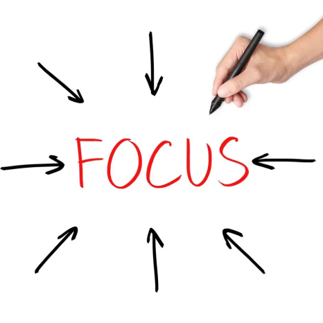
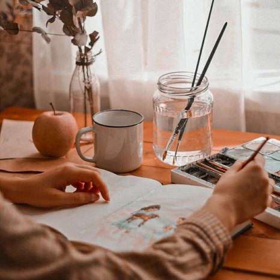

Чередование работы и отдыха: используйте технику помодоро или схожие методы. Например, 25 минут интенсивной работы, затем 5 минут перерыва, помогает удерживать концентрацию и избегать переутомления. После каждых четырёх таких циклов устраивайте более длительный перерыв (15–30 минут) для полного восстановления. Если работа требует длительного погружения, можно выбирать более гибкий подход — работать блоками по 50–60 минут с более длинными паузами. Это позволяет чередовать периоды высокой концентрации с восстановлением, обеспечивая баланс энергии и креативности.
Ограничение дел и фокус на главном: каждый день определяйте максимум три приоритетных задачи, которые вы обязательно хотите выполнить. Это предотвращает перегрузку задачами и помогает оставаться сосредоточенным на самых важных делах. Остальные задачи планируйте в качестве опциональных — если не удастся их завершить, это не окажет критического влияния на результат, но позволит поддерживать внутренний баланс.
Творческая разминка: начните день с коротких креативных упражнений, таких как скетчи, свободное письмо или ассоциативные игры. Это помогает разогреть воображение и настроиться на продуктивную волну. Такие разогревающие активности особенно полезны, если накануне был сложный или эмоционально нагруженный день. Они не требуют больших временных затрат, но существенно повышают готовность к сложным задачам.
Детокс от отвлечений: отключите уведомления, выделите блоки времени для работы без прерываний и настройте комфортное рабочее пространство, которое минимизирует отвлекающие факторы. Также можно установить правила для отдельных временных блоков, такие как “никаких звонков” или “без социальных сетей”, что помогает глубже погрузиться в задачи. Осознанное управление отвлечениями сохраняет концентрацию и стимулирует творческий поток.
Рефлексия и анализ: в конце недели подводите итоги, оценивайте свои достижения и определяйте, что сработало лучше, а что стоит изменить. Рефлексия помогает понять, какие факторы поддерживают ваш баланс, а какие его нарушают, и в будущем корректировать планирование. Анализ успехов и недочетов позволяет закрепить продуктивные привычки и исключить лишние стрессовые факторы.